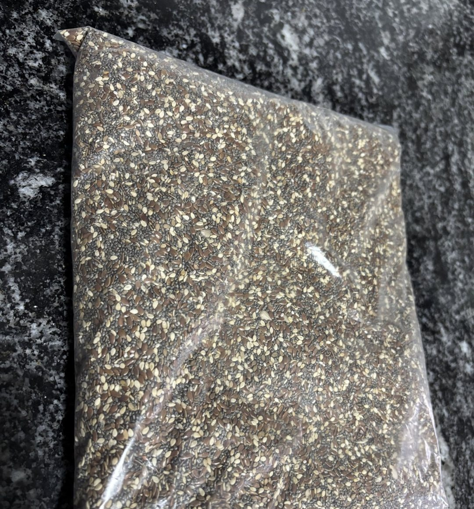

Acopio Saludable
Tu despensa,
llevada a tu casa
Sin compra mínima en Carlos Paz · sin cargo desde $20.000

Dátiles con carozo
1 kg
1 kg

Mix con cajú y girasol
1 kg
1 kg

Pasas sin semilla
1 kg
1 kg

Mix de semillas
1 kg
1 kg
DESPENSA DE 4 KILOS
$28.500
$26.200
por transferencia
por transferencia
Pedila: WhatsApp 3541 51-9630
Carlos Paz y la zona · se paga antes de la entrega · acopiosaludable.com